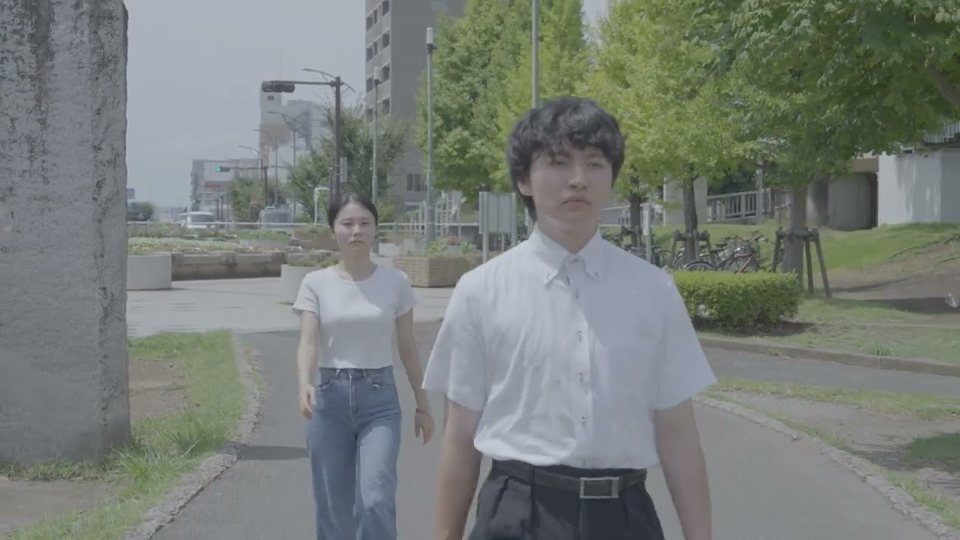
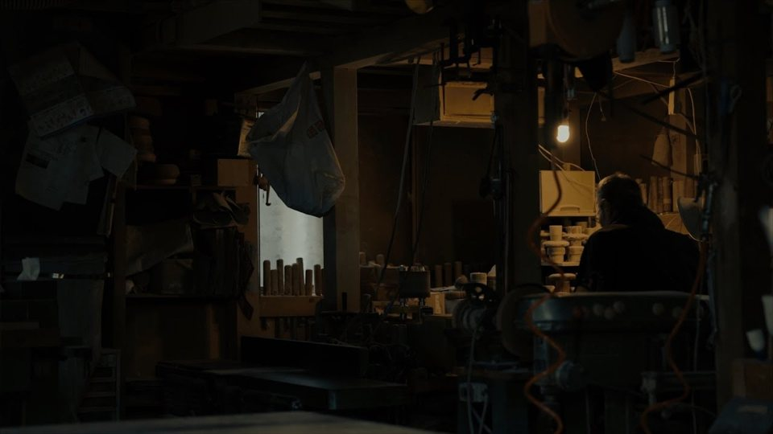
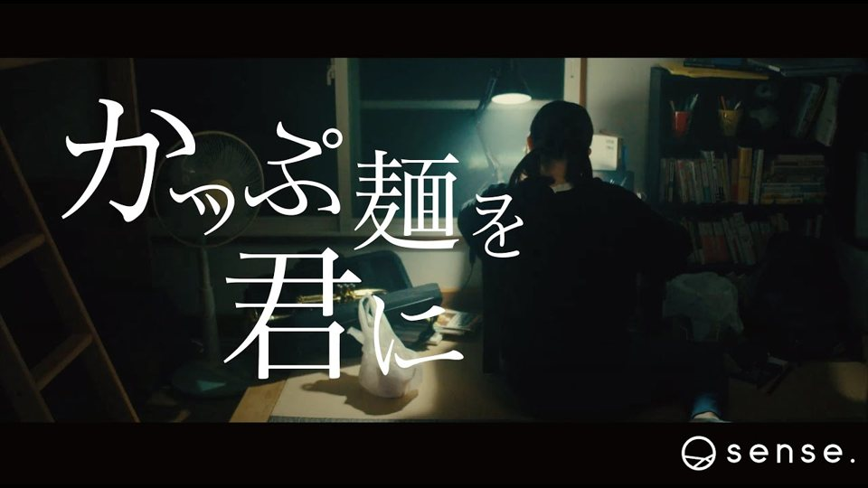

Works作品
Film映像

出演、企画、監督、脚本、編集
2024
YouTube
監督。ニッポン手仕事図鑑コンペティション応募作
2025
YouTube
主演、助監督、脚本アシスタント。sense.
2022
YouTube- 2024
- Abema の依頼で脚本TikTok で 100 万回再生
- TikTok
- 2023
- 神輿アシスタント
- 2023
- 製薬会社の社内ビデオ撮影アシスタント
- —
- ワンシーンズ発見監督、脚本
- 未公開
Writing文
- 2023
- 誠実盲SFC 文芸会 部誌『冷たい便座』
- note
- 2023
- 今大輔の ZINE に寄稿
- 2024
- ミスター・ミス SFC コンテスト 2024コピー、PM
- 2021–
- 短歌
Design & Web誌面とウェブ
- 2026
- 映画館このサイトの中の、写真のような映画館。昼と夜、カーテン、崩れる非常口
- Open
- 2026
- BSS 僕が先に好きだったのに自分の文章を、綴じない雑誌の号として十五枚に組んだ
- 2026
- BSS 赤と黒同じ本文の、別の組み方
- 2026
- 小石を三つ投げる画面で見るポスター。乱数で小石を三つ投げ、光と時間で陰翳を見せる
- 2026
- 螺旋の雑誌綴じない雑誌の仕組み。3D の螺旋階段と 2D の展開図
- 2026
- 刷り重ねデザインシステム